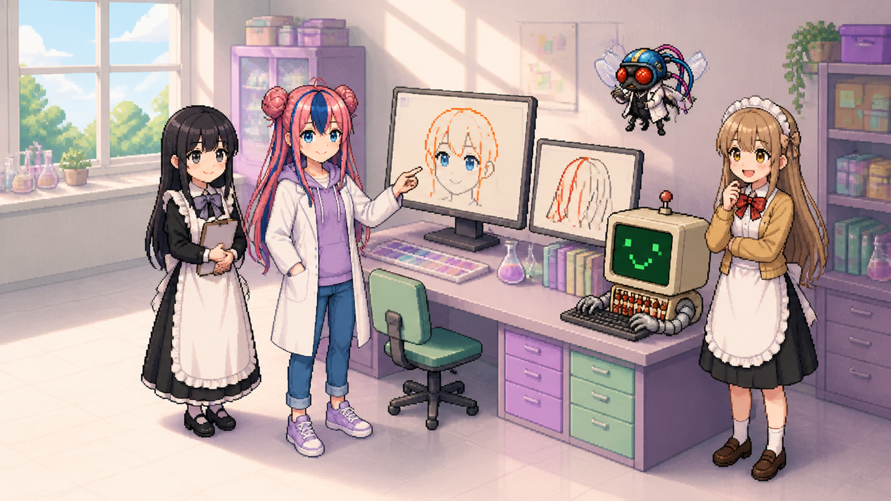
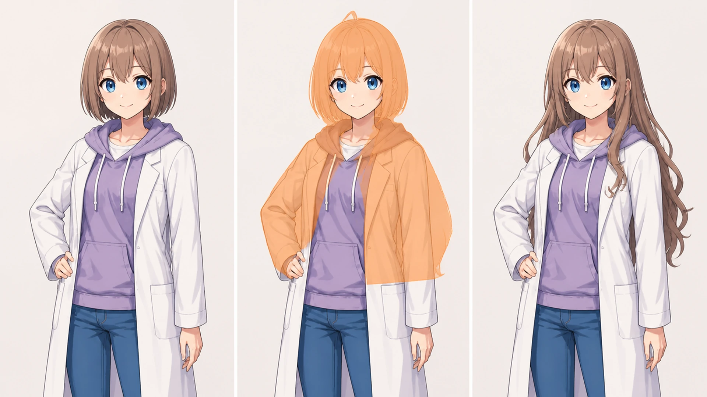
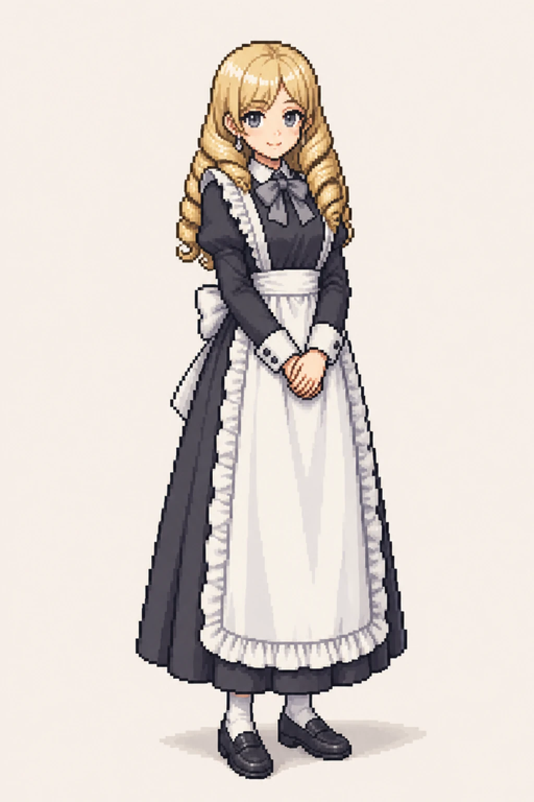
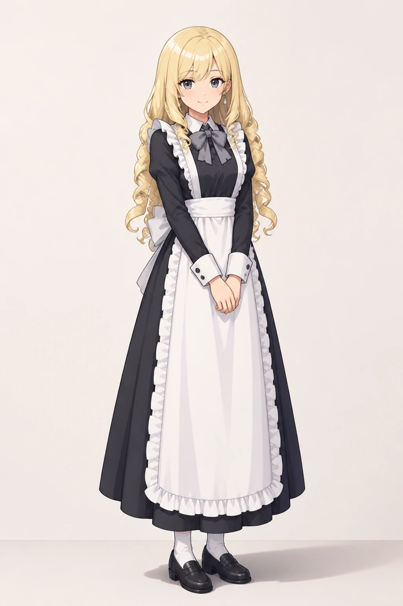
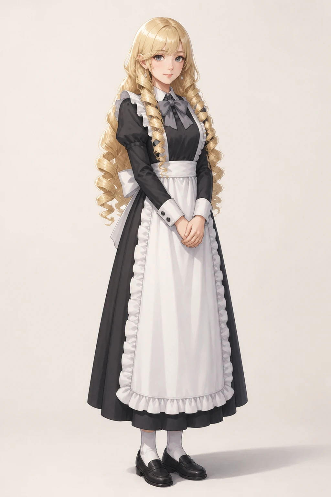
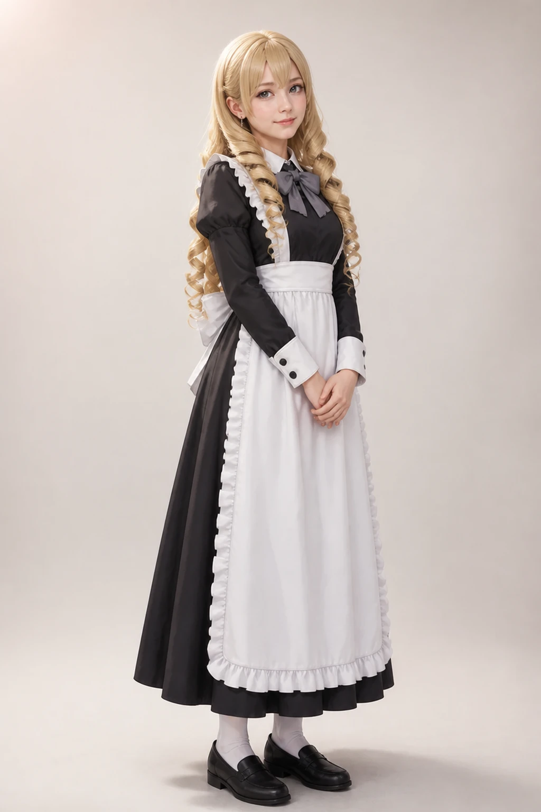
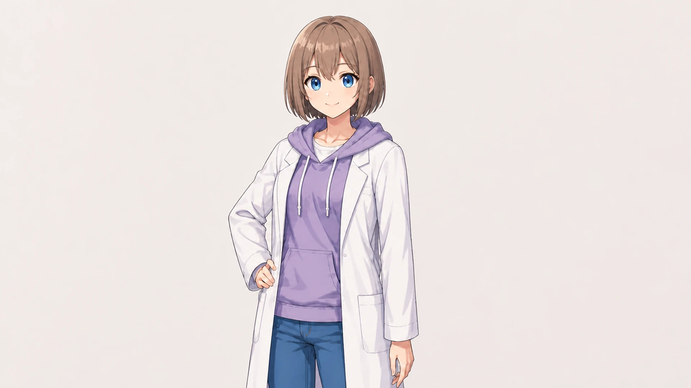

오늘의 과제

박사오늘은 셋에게 도구로 가발을 씌운다. 얼굴은 그대로, 머리만 바꾼다.

주판봇문장 하나면 충분합니다! 'beautiful hair'!

초파리 연구원그럼 도구가 머리 모양도 얼굴도 마음대로 고를걸. 조각으로 나눠 적자.

시아제 눈 색이 바뀌면 곤란해요…

모델은 셋 모두입니다. 이번에는 손으로 그리지 않고 도구로 변장시킵니다. 주판봇은 '멋진 머리'라고만 적고, 초파리는 1~4부의 원리를 조각마다 나눠 적습니다.
그림 실력·코드·수식을 몰라도 됩니다. 실험을 눌러 보며 따라오세요.
길이·앞머리·가르마·부피와 끝·다발과 묶음·색·윤기·움직임을 조각마다 적고, 고정과 금지를 덧붙입니다
음식 주문도 '메뉴·맵기·양·포장'을 따로 말하면 틀리지 않습니다.
이 시리즈의 Genspark 그림 요청문은 모두 이 순서로 썼습니다. 고정 조각에는 머리 아래 얼굴·눈 색·나이(20대 성인)를 적고, 금지 조각에는 유명 캐릭터와 닮음, 그림 속 글자를 넣습니다.


여덟 조각은 1~4부의 순서와 같습니다. 1부(길이·앞머리·가르마·부피) → 2부(다발·묶음) → 3부(색·윤기) → 4부(움직임).
고정 조각(얼굴·눈 색·나이)은 머리를 바꿀 때 얼굴이 따라 바뀌는 것을 막습니다. 금지 조각에는 '머리 이름 때문에 어려 보이는 것'을 막는 말도 넣습니다(6부).
작업에서는 이 틀을 저장해 두고 조각만 바꿔 씁니다. 빠진 조각이 있으면 그 원리의 단계로 돌아가 확인합니다.
조립한 문장으로 시아에게 금발 가발을 씌웠더니 눈 색까지 금색이 됐습니다. 다음 순서는?
고정 조각에 'keep her gray eyes and face unchanged'를 넣고, 머리만 가려 다시 그리기(2단계)로 바꿉니다. 문장만으로는 얼굴을 완전히 지키기 어렵습니다.
머리 부분만 가려 다시 그리되, 새 가발이 차지할 자리까지 넉넉히 가리고 얼굴은 비웁니다

학교 수학으로 보면 — 비율 — 부분 넓이를 전체 넓이로 나눕니다.
| 식 조각 | 뜻 |
|---|---|
| 가린 넓이 | 주황으로 칠한 부분의 픽셀 수 |
| 그림 전체 넓이 | 가로 × 세로 픽셀 수 |
| 비율 | 새로 그려지는 몫. 클수록 원래 그림과 멀어짐 |

사진 앱에서 배경만 지우기를 할 때도 사람 윤곽을 정확히 남겨야 사람이 안 잘립니다.
그림 생성 도구의 '부분 수정(영역 칠하기)' 기능이 이것입니다. 머리 가림 영역을 그릴 때는 이마 선 바로 위까지만 칠하고 눈썹·눈은 남깁니다. VFX 합성에서도 머리카락 경계는 따로 정밀한 가림(헤어 매트)을 만들어, 잔머리가 배경과 자연스럽게 섞이게 합니다.

가림 영역이 새 가발 길이보다 짧으면 가발이 가림 영역 끝에서 잘린 듯 끝납니다. 아래쪽 범위를 가발 길이 이상으로 넓혀야 합니다.
'얼굴 지키기'를 끄면 얼굴까지 다시 그려져 눈 색·얼굴형이 바뀔 수 있습니다. 6부 f8이 이 실수입니다.
비율이 커질수록 원래 그림에서 멀어집니다. 필요한 만큼만, 그러나 새 머리가 들어갈 만큼은 넉넉히 가립니다.

가림 영역으로 머리만 바꿨는데, 새 머리와 원래 어깨 사이에 경계선이 보입니다. 무엇을 고칠까요?
가림 영역 경계가 너무 딱딱하거나 좁습니다. 경계를 조금 흐리게(부드러운 가장자리) 하고, 머리카락이 닿는 어깨까지 넉넉히 가립니다.
가이드 가닥 몇백 개만 계산하고, 사이를 채워 수만 가닥을 그립니다
학교 수학으로 보면 — 곱셈 — 묶음 수 × 묶음 크기 = 전체 개수.
| 식 조각 | 뜻 |
|---|---|
| 가이드 가닥 | 움직임을 직접 계산하는 대표 가닥 |
| 채우기 수 | 가이드 사이를 메우는 가닥 수 |
| 덩어리 값 | 채우기 가닥을 가이드 쪽으로 모으는 정도(다발감) |
학급 반장 몇 명만 선생님 말을 듣고 반 전체를 이끄는 것과 비슷합니다.
VFX 헤어 도구는 가이드 가닥에 굵기·뻣뻣함·곱슬(반지름·바퀴 수)·감쇠·덩어리 값을 줍니다. 도구마다 이름이 달라, 예를 들어 Blender 헤어에서는 채우기를 Children(Interpolated), 덩어리를 Clumping, 곱슬을 Kink(Curl)이라고 부릅니다. 4부의 바람과 늦게 따라오기는 가이드에서 계산되고, 2부의 말린 머리는 곱슬 값, 다발은 덩어리 값으로 만듭니다.

가닥 수는 같아도 가이드가 적으면 움직임이 뭉툭하고, 많으면 섬세하지만 계산이 늘어납니다.
덩어리 값을 올리면 채우기 가닥이 가이드 쪽으로 모여 2부의 다발이 생깁니다. 0이면 털이 고르게 퍼져 솜뭉치처럼 보입니다.
곱슬 값은 2부 4단계의 원기둥 나선과 같습니다. 곱슬을 올리면 같은 길이의 가닥이 짧게 내려옵니다.
VFX 머리카락이 솜사탕처럼 고르게 퍼지고 다발이 안 보입니다. 어떤 값을 볼까요?
덩어리 값이 너무 낮습니다. 덩어리를 올려 채우기 가닥을 가이드 쪽으로 모으고, 가이드 사이 간격이 다발 크기와 맞는지 봅니다.
흐름과 원리는 그대로 두고, 픽셀아트·애니풍·반실사·실사풍에 맞게 다발과 선의 양만 바꿉니다
지도도 동네 지도는 골목까지, 전국 지도는 큰길만 그립니다.
이 실험의 예시 구간은 픽셀아트 다발 3~5개, 애니풍 8~15개, 반실사 20~40개, 실사풍은 다발 위에 가는 털을 수없이 더합니다. 화풍이 사실적일수록 4부의 감정 과장은 작게 씁니다.
화풍이 바뀌어도 머리 흐름의 방향, 묶은 점, 윤기 띠 높이는 같습니다. 바뀌는 것은 다발 수와 가는 털의 양뿐입니다.
픽셀아트는 큰 다발 몇 개와 윤기 띠 한 줄로, 실사풍은 다발마다 가는 털과 흩어진 잔머리를 더해 그립니다.
AI 문장에서도 화풍 조각만 바꾸고 나머지 조각은 그대로 두면, 네 화풍의 같은 가발을 만들 수 있습니다.




실사풍은 캐릭터를 코스프레한 가상의 성인 모델 사진으로 만든 것입니다. 실존 인물이 아닙니다.
실사풍으로 만든 그림에서 머리가 반짝이는 플라스틱 덩어리처럼 보입니다. 무엇을 더할까요?
실사풍인데 다발 수가 애니풍 그대로입니다. 'realistic hair with fine flyaway strands and natural texture'처럼 가는 털을 더하고, 윤기 띠도 부드럽게 퍼지게 적습니다.
이 부에서 배운 원리를 그림 생성 AI(Genspark 등)로 직접 확인합니다. A는 이 페이지 그림을 실제로 만든 프롬프트, B는 원리를 하나 빼거나 바꾼 비교용 문장입니다.
참고 그림 내려받기: haru_anime_base · sia_anime_base · moa_anime_base · haru_sheet · sia_sheet · moa_sheet · doctor_sheet · fruitfly_sprites_6 · jupanbot_ref_genspark_v0 · pixel_style_ref_prev_cover
그림 생성 도구의 부분 수정(영역 칠하기) 기능으로 얼굴은 두고 머리만 바꿉니다.
첨부: refs/haru_anime_base.png
Illustration, wide 16:9. Art style: high-quality anime illustration, clean confident lineart, two-tone cel shading, natural adult proportions. Match the attached reference images exactly (face, hair, colors, accessories). All characters are adults in their early twenties (the Professor is an adult man in his thirties, normal proportions, not chibi); modest outfits exactly as described. Three panels side by side, upper body, identical pose. 1) Haru (adult lab assistant in her early twenties, big bright blue eyes) wearing a wig: a chin-length light chestnut-brown bob with straight bangs; she keeps her own face, big bright blue eyes and outfit; the wig completely covers her usual pink hair, buns and navy streaks, wearing lavender hoodie with white drawstrings over a white t-shirt, open white knee-length lab coat, rolled-up jeans, lavender sneakers. 2) the same image with the hair area and the shoulders covered by a semi-transparent orange overlay; the face, eyebrows and eyes are left clear. 3) the result: the same Haru with a waist-length soft wavy light-brown wig flowing over her shoulders; face, eyes and expression unchanged. Light from the upper left. Plain off-white studio background or a bright clean lab interior. No text, no letters, no numbers, no speech bubbles, no logos, no watermark, no revealing clothing, not childlike, no school uniform, not resembling any famous anime character.
(부분 수정 기능에서) 원래 짧은 단발 머리만 딱 맞게 칠하고, 어깨는 칠하지 않은 채 아래 문장을 넣는다: waist-length soft wavy light brown wig, natural volume, keep her face, big bright blue eyes and expression unchanged.

실제 결과: A는 세 단계(원래 단발 → 머리와 어깨를 주황으로 칠함 → 긴 웨이브 가발)가 나왔고, 얼굴과 파란 눈이 그대로입니다. 주황이 얼굴 가장자리를 조금 덮었습니다. B는 가발이 잘린 것이 아니라 아예 원래 단발 그대로 나왔습니다. 칠한 영역이 새 머리가 들어갈 자리보다 좁으면 도구가 긴 머리를 넣지 못합니다.
옷만 바꾸는 실습처럼, 머리만 바꾸는 실습도 설명용 그림이 아니라 도구의 부분 수정 기능으로 합니다.
말린 금발 가발을 쓴 시아를 애니풍에서 픽셀아트로 바꿔, 원리(원기둥 축·윤기 띠 높이)는 그대로인지 봅니다.
첨부: refs/sia_anime_base.png, refs/sia_sheet.png
Character full body, vertical 2:3. Art style: high-quality anime illustration, clean lineart, two-tone cel shading; the hair is 8 to 15 locks with a few fine lines. Sia (adult maid intern in her early twenties, gray eyes, small silver earrings) wearing a wig: a long blonde wig with large spiral drill curls on both sides; she keeps her own face, gray eyes, small silver earrings and outfit; the wig completely covers her usual jet-black hair, wearing charcoal-black long-sleeved maid dress, large gray bow at the collar, long white frilled apron. Pose: standing, three-quarter view, hands folded in front. Light from the upper left; the highlight band on the curls is about one third down from the top. Plain off-white studio background. No text, no letters, no numbers, no speech bubbles, no logos, no watermark, no revealing clothing, not childlike, no school uniform, not resembling any famous anime character.
Same image. Change only: redraw in 16-bit pixel art with clearly visible square pixels and only 3 to 5 large hair locks; keep the curl axis, the highlight band height, the pose and the outfit. Keep the same framing. Still no text.
실제 결과: 픽셀아트(B)는 말린 머리가 큰 다발 몇 개로 줄었고, 말린 방향·윤기 높이·자세·옷·회색 눈은 애니풍(A)과 같습니다. 화풍 조각만 바꾸면 원리는 그대로 남는다는 것을 확인할 수 있습니다.
위의 '직접 만들어 보기'가 이 페이지 그림을 다시 만드는 실습이었다면, 연습 문제는 새 장면을 받아 이 부의 원리를 문장으로 옮겨 보는 연습입니다. 문제마다 상황 → 순서별 설명 → 연습 프롬프트 → 예상 결과 → 확인표 → 자주 나오는 실수 순서로 봅니다.
예상 결과 그림은 아래 연습 프롬프트로 Genspark에서 만든 예시입니다. 같은 프롬프트라도 결과는 매번 조금씩 다릅니다.
배우는 원리 — 5부 2단계 — 가림 영역으로 머리만 다시 그리고, 얼굴·눈 색·귀걸이는 그대로 지키는 연습입니다.
첨부: refs/haru_anime_base.png, refs/sia_anime_base.png, refs/moa_anime_base.png
Illustration, wide 16:9. Art style: high-quality anime illustration, clean confident lineart, two-tone cel shading, natural adult proportions. Match the attached reference images exactly (face, hair, colors, accessories). All characters are adults in their early twenties (the Professor is an adult man in his thirties, normal proportions, not chibi); modest outfits exactly as described. Two panels side by side, identical upper-body pose and lighting. Left: Sia (adult maid intern, long straight jet-black hair, no headdress, gray eyes, small silver earrings), wearing charcoal-black long-sleeved maid dress, large gray bow at the collar, long white frilled apron. Right: exactly the same image, but only the hair color is changed to silver, as if repainted with inpainting: same hair length, same locks and same parting; her face, gray eyes, small silver earrings, expression, outfit and background are pixel-for-pixel the same. Light from the upper left in both panels. Plain off-white studio background or a bright clean lab interior. No text, no letters, no numbers, no speech bubbles, no logos, no watermark, no revealing clothing, not childlike, no school uniform, not resembling any famous anime character.
| 결과에서 보이는 증상 | 덧붙이거나 바꿀 문장 |
|---|---|
| 눈 색까지 바뀜 | 칠한 영역을 이마 선 위로 줄이고 'keep her gray eyes and earrings unchanged' |
| 길이가 짧아지거나 길어짐 | same hair length, same locks and same parting |
| 경계에 띠 같은 자국 | 칠한 영역 가장자리를 부드럽게(feather) 하고 다시 만들기 |
바꿔 해 보기 — 같은 방법으로 은발 대신 흰머리(3부 3단계)로 바꿔 보세요. 선을 덜어 내야 흰머리로 보인다는 점을 수정 문장에 넣어야 합니다.
배우는 원리 — 5부 1·4단계 — 머리 문장 조각은 그대로 두고 사람만 바꿔도 같은 머리가 나오는지, 각자의 고정값은 지켜지는지 확인합니다.
첨부: refs/haru_anime_base.png, refs/sia_anime_base.png, refs/moa_anime_base.png
Illustration, wide 16:9. Art style: high-quality anime illustration, clean confident lineart, two-tone cel shading, natural adult proportions. Match the attached reference images exactly (face, hair, colors, accessories). All characters are adults in their early twenties (the Professor is an adult man in his thirties, normal proportions, not chibi); modest outfits exactly as described. Group picture, three adults standing side by side, upper body, front view, all wearing the same style of wig: a low ponytail tied at the nape, shoulder-length tail, side-swept bangs, natural volume, soft ribbon-like locks. Left: Haru (adult lab assistant in her early twenties, big bright blue eyes) with a light-brown version of this wig, wearing lavender hoodie with white drawstrings over a white t-shirt, open white knee-length lab coat, rolled-up jeans, lavender sneakers. Center: Sia (adult maid intern in her early twenties, gray eyes, small silver earrings) with a dark chestnut version, wearing charcoal-black long-sleeved maid dress, large gray bow at the collar, long white frilled apron. Right: Moa (adult maid intern in her early twenties, amber eyes) with an ash-beige version, the white frilled maid headband and the white ribbon over her LEFT ear on top of the wig, wearing camel knit cardigan over a white blouse, red and navy plaid bow tie, white frilled apron, black skirt. Each keeps her own face and eye color. Light from the upper left. Plain off-white studio background or a bright clean lab interior. No text, no letters, no numbers, no speech bubbles, no logos, no watermark, no revealing clothing, not childlike, no school uniform, not resembling any famous anime character.
| 결과에서 보이는 증상 | 덧붙이거나 바꿀 문장 |
|---|---|
| 세 사람 얼굴이 비슷해짐 | each keeps her own face and eye color, attach all three references |
| 한 사람만 다른 머리 모양 | the same low ponytail at the nape for all three |
| 하루의 번이 보임 | the wig completely covers her usual pink hair and buns |
바꿔 해 보기 — 머리 문장의 ⑧ 움직임만 '왼쪽 바람'으로 바꿔 세 사람의 꼬리가 모두 같은 쪽으로 날리는지 확인해 보세요.

| 항목 | 주판봇 | 초파리 |
|---|---|---|
| 닮음(얼굴·눈 색 고정) | 7 | 9 |
| 원리(여덟 조각·가림 영역) | 8 | 8 |
| 자연스러움(경계·다발) | 7 | 8 |
| 합계 | 22 | 25 |


점수는 이야기 속 예시입니다. 실제 그림을 평가한 값이 아닙니다.
| 주제 | 한 줄 | 작업에서는 |
|---|---|---|
| 머리 문장 | 여덟 조각 + 고정 + 금지 | 1~4부 순서대로 조각 |
| 가림 영역 | 다시 그려지는 비율 = 가린 넓이 ÷ 전체 | 새 가발 자리까지, 얼굴은 빼고 |
| 가이드 가닥 | 가닥 수 = 가이드 × 채우기 | 덩어리 값으로 다발 |
| 화풍 | 원리는 그대로, 양만 바꾸기 | 픽셀 3~5 · 애니 8~15 · 반실사 20~40 다발 |

이 페이지에 나온 개념·방법·비유·쓰임을 모았습니다. 검색하고, "설명 보러 가기"로 본문에 돌아갑니다.
지식 색인을 출처와 함께 파일로 내려받습니다. 서지 관리는 BibTeX·RIS, 온톨로지 편집은 Turtle, 그래프 도구는 CSV, 여러 페이지 합치기는 kg.json입니다.